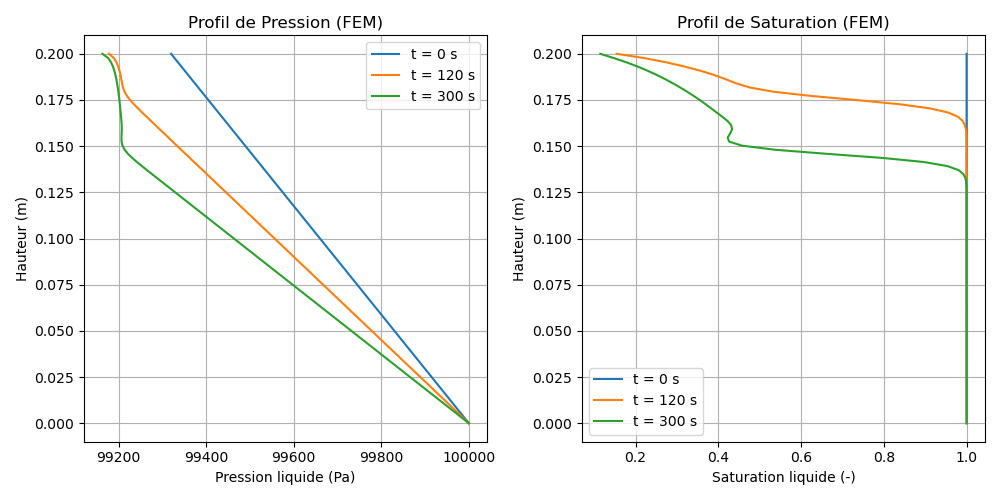

7 Modèle M10 — Équation de Richards : drainage d’une colonne de billes sous gravité (1D)
Fichiers sources :
src/Models/ModelFiles/M10.c·test_examples/m10-1/m10-1·test_examples/m10-1/billesAuteur du modèle Bil : P. Dangla (Université Gustave Eiffel)
7.1 Table des matières
- Contexte et objectif
- Hypothèses
- Variables et notation
- Modèle mathématique
- Conditions aux limites et initiales
- Cas test : colonne de billes sous drainage gravitaire (
test_examples/m10-1) - Résultats
- Discrétisation numérique
- Références bibliographiques
7.2 1. Contexte et objectif
Le modèle M10 résout l’équation de Richards pour l’écoulement monophasique de l’eau liquide dans un milieu poreux partiellement saturé. La pression de la phase gazeuse est supposée uniforme et constante ; seule la pression liquide \(p_l\) est une inconnue du problème.
Le cas test test_examples/m10-1 simule le drainage gravitaire d’une colonne verticale de billes de verre. C’est un cas classique de validation de l’implémentation de l’équation de Richards : le milieu (billes de verre) possède une courbe de rétention bien caractérisée avec une pression d’entrée d’air basse (~500 Pa) et une désaturation rapide au-delà de ce seuil. Ce type d’expérience est utilisé pour étalonner les codes de transfert en milieu poreux non saturé.
Le domaine est une colonne unidimensionnelle verticale de longueur \(L = 0.2\) m, composée d’un seul matériau homogène :
| Paramètre | Valeur |
|---|---|
| Porosité \(\phi\) | 0.38 |
| Perméabilité intrinsèque \(k_\text{int}\) | \(8.9 \times 10^{-12}\) m² |
7.3 2. Hypothèses
- Monophasique liquide : seule la phase liquide (eau) est mobile. La phase gazeuse est supposée à pression constante \(p_g = 10^5\) Pa (connexion à l’atmosphère).
- Isotherme : la température est uniforme et constante ; viscosité et masse volumique sont des constantes.
- Porosité rigide : le squelette solide est indéformable ; \(\phi = \text{const}\).
- Loi de Darcy généralisée avec gravité pour le transport de la phase liquide.
- Équilibre capillaire local : la saturation \(s_l\) est une fonction univoque de la pression capillaire \(p_c = p_g - p_l\).
- Gravité : \(g = -9.81\) m/s² orientée dans la direction décroissante de \(x\) (axe \(x\) vertical vers le haut).
7.4 3. Variables et notation
7.4.1 Inconnue primaire
| Symbole | Signification | Unité |
|---|---|---|
| \(p_l\) | Pression de la phase liquide | Pa |
La pression capillaire en découle directement :
\[p_c = p_g - p_l\]
7.4.2 Variables secondaires
| Symbole | Signification |
|---|---|
| \(s_l(p_c)\) | Degré de saturation en eau liquide |
| \(k_{rl}(p_c)\) | Perméabilité relative à l’eau |
| \(K_l\) | Conductivité hydraulique effective |
| \(m_l\) | Teneur en eau massique |
| \(W_l\) | Flux massique de liquide |
7.4.3 Constantes physico-chimiques
| Symbole | Valeur | Signification |
|---|---|---|
| \(T\) | — | Température (isotherme) |
| \(\rho_l\) | 1000 kg/m³ | Masse volumique de l’eau liquide |
| \(\mu_l\) | \(10^{-3}\) Pa·s | Viscosité dynamique de l’eau |
| \(k_\text{int}\) | \(8.9 \times 10^{-12}\) m² | Perméabilité intrinsèque |
| \(\phi\) | 0.38 | Porosité |
| \(p_g\) | \(10^5\) Pa | Pression gazeuse (constante, atmosphérique) |
| \(g\) | \(-9.81\) m/s² | Accélération de la pesanteur |
7.5 4. Modèle mathématique
7.5.1 4.1 Équation de conservation
Le système est composé d’une unique équation de bilan de masse pour l’eau liquide, intégrée sur le volume élémentaire représentatif (VER) :
\[\frac{\partial m_l}{\partial t} + \nabla \cdot \mathbf{W}_l = 0\]
avec la teneur en eau massique :
\[m_l = \rho_l\,\phi\,s_l(p_c)\]
7.5.2 4.2 Loi de flux de Darcy
Le flux massique de liquide \(\mathbf{W}_l\) est donné par la loi de Darcy généralisée avec gravité :
\[\mathbf{W}_l = -K_l\,\left(\nabla p_l - \rho_l\,\mathbf{g}\right)\]
où la conductivité hydraulique effective est :
\[K_l = \frac{\rho_l\,k_\text{int}\,k_{rl}(p_c)}{\mu_l}\]
En 1D avec \(g\) selon l’axe \(x\) (positif vers le haut), cela donne :
\[W_l = -K_l\,\left(\frac{\partial p_l}{\partial x} - \rho_l\,g\right) = -K_l\,\left(\frac{\partial p_l}{\partial x} + \rho_l\,|g|\right)\]
Équilibre hydrostatique : à l’équilibre (\(W_l = 0\)) : \(\partial p_l/\partial x = -\rho_l\,|g| \approx -9810\) Pa/m. La pression décroît linéairement avec la hauteur.
7.5.3 4.3 Courbe de rétention et perméabilité relative
Les fonctions \(s_l(p_c)\) et \(k_{rl}(p_c)\) sont fournies sous forme tabulée dans le fichier billes. Ce fichier contient 2000 points couvrant la plage \(p_c \in [500,\ 1000]\) Pa, avec les colonnes :
p_c [Pa] s_l [-] k_rl [-]Les caractéristiques clés des billes de verre sont :
| Grandeur | Valeur | Description |
|---|---|---|
| \(p_{c,\text{entrée}}\) | ≈ 500 Pa | Pression d’entrée d’air (air-entry pressure) |
| \(s_{l,\text{max}}\) | 1.0 | Saturation maximale (\(p_c < 500\) Pa) |
| \(s_{l,\text{résiduel}}\) | ≈ 0.09 | Saturation résiduelle (\(p_c = 1000\) Pa) |
| \(k_{rl}(s_l = 1)\) | 1.0 | Perméabilité relative saturée |
| \(k_{rl}(s_l = 0.09)\) | ≈ \(2.6 \times 10^{-8}\) | Perméabilité relative résiduelle |
La courbe est très raide (désaturation quasi-totale sur un intervalle de 500 Pa), caractéristique d’un milieu à pores de taille homogène.
7.5.4 4.4 Forme condensée — équation de Richards
En substituant les expressions précédentes et en utilisant \(\partial m_l/\partial t = -\rho_l\,\phi\,(\partial s_l/\partial p_c)\,(\partial p_l/\partial t)\), on obtient la forme standard de l’équation de Richards :
\[\boxed{-\rho_l\,\phi\,\frac{\partial s_l}{\partial p_c}\,\frac{\partial p_l}{\partial t} - \nabla \cdot \left[\frac{\rho_l\,k_\text{int}\,k_{rl}(p_c)}{\mu_l}\left(\nabla p_l - \rho_l\,\mathbf{g}\right)\right] = 0}\]
Le coefficient \(C(p_c) = -\rho_l\,\phi\,\partial s_l/\partial p_c \geq 0\) est la capacité capillaire ; il intervient dans la matrice de masse du problème discret.
7.6 5. Conditions aux limites et initiales
7.6.1 Conditions initiales
La pression initiale est donnée par un champ linéaire (sous-hydrostatique, colonne initialement près de la saturation complète) :
\[p_l(x,\,t=0) = p_{l0} + G\,x, \qquad p_{l0} = 10^5 \text{ Pa},\quad G = -3400 \text{ Pa/m}\]
| Bord | \(x\) [m] | \(p_l(t=0)\) [Pa] | \(p_c(t=0)\) [Pa] | \(s_l(t=0)\) [-] |
|---|---|---|---|---|
| Bas | 0 | \(10^5\) | 0 | 1.000 |
| Haut | 0.2 | \(9.932 \times 10^4\) | 680 | ≈ 0.9998 |
La pression capillaire initiale est partout inférieure à la valeur critique (\(\approx 680\) Pa au sommet), et la saturation est quasi-totale (\(s_l \approx 1\)) dans toute la colonne.
Remarque : le gradient initial \(G = -3400\) Pa/m est inférieur en valeur absolue au gradient hydrostatique \(-9810\) Pa/m. La colonne n’est pas en équilibre ; le flux initial est non nul et orienté vers le bas.
7.6.2 Conditions aux limites
| Bord | \(x\) [m] | Type | Valeur |
|---|---|---|---|
| Bas | 0 | Dirichlet | \(p_l = 10^5\) Pa (pression atmosphérique, fond saturé) |
| Haut | 0.2 | Neumann naturel | \(\mathbf{W}_l \cdot \mathbf{n} = 0\) (drainage libre, pas de flux imposé) |
Le bord bas est maintenu à la pression atmosphérique (fond immergé ou drainage à pression contrôlée). Le bord haut est libre : c’est la condition de Neumann naturelle du problème variationnel, qui correspond physiquement à un sommet ouvert sans flux entrant (l’eau peut s’évacuer par gravité vers le bas uniquement).
7.7 6. Cas test : colonne de billes sous drainage gravitaire
7.7.1 Paramètres de simulation
| Paramètre | Valeur |
|---|---|
| Longueur de la colonne \(L\) | 0.2 m |
| Nombre d’éléments | 100 (maillage non uniforme, raffiné en \(x=0\)) |
| Durée totale | 300 s |
| Instants de sortie | \(t = 0\) s, \(t = 120\) s, \(t = 300\) s |
| Pas de temps initial \(\Delta t_\text{ini}\) | 0.01 s |
| Pas de temps maximal \(\Delta t_\text{max}\) | 1000 s |
| Variation objective (OBJE) | \(\Delta p_l = 10\) Pa |
| Tolérance Newton | \(10^{-10}\) |
| Nombre d’itérations max | 10 |
7.7.2 Physique attendue
L’état initial (gradient sous-hydrostatique) crée un déséquilibre : la force gravitaire domine le gradient de pression, et l’eau s’écoule vers le bas. Le système évolue vers l’équilibre hydrostatique (\(\nabla p_l = \rho_l\,\mathbf{g}\), soit \(-9810\) Pa/m), qui implique une désaturation significative en haut de la colonne.
La séquence physique est :
- Drainage immédiat : dès \(t=0\), un flux vers le bas s’établit (\(W_l \approx -5.7 \times 10^{-2}\) kg/(m²·s) à la base).
- Front de désaturation : la pression capillaire en sommet augmente au-delà de la pression d’entrée (\(p_c > 500\) Pa) ; la saturation chute rapidement de 1 à une valeur résiduelle (~0.09).
- Progression du front : le front de désaturation descend de \(x = 0.2\) m vers \(x = 0\), à mesure que la pression se redistribue.
- Réduction du flux : la perméabilité relative \(k_{rl}\) décroît fortement dans la zone désaturée, ralentissant le drainage.

7.8 7. Résultats
Les trois instants de sortie illustrent les différentes étapes du drainage.
7.8.1 État initial (\(t = 0\) s)
| \(x\) [m] | \(p_l\) [Pa] | \(W_l\) [kg/(m²·s)] | \(s_l\) [-] |
|---|---|---|---|
| 0 | \(1.000 \times 10^5\) | \(-5.705 \times 10^{-2}\) | 1.000 |
| 0.1 | \(\approx 9.966 \times 10^4\) | \(-5.704 \times 10^{-2}\) | 1.000 |
| 0.2 | \(9.932 \times 10^4\) | \(-5.702 \times 10^{-2}\) | 0.9998 |
Le flux est quasi-uniforme dans toute la colonne : la saturation est totale et la conductivité hydraulique est maximale. Le flux s’exprime analytiquement comme :
\[W_l \approx -K_l\,(G + \rho_l\,|g|) = -\frac{\rho_l\,k_\text{int}}{\mu_l}\,(-3400 + 9810) = -8.9 \times 10^{-6} \times 6410 \approx -5.7 \times 10^{-2} \text{ kg/(m²·s)}\]
7.8.2 État à \(t = 120\) s
| \(x\) [m] | \(p_l\) [Pa] | \(W_l\) [kg/(m²·s)] | \(s_l\) [-] |
|---|---|---|---|
| 0 | \(1.000 \times 10^5\) | \(-4.782 \times 10^{-2}\) | 1.000 |
| 0.19 | \(\approx 9.919 \times 10^4\) | \(-2.86 \times 10^{-4}\) | 0.220 |
| 0.2 | \(9.918 \times 10^4\) | \(-2.86 \times 10^{-4}\) | 0.154 |
Le front de désaturation a atteint \(x \approx 0.15\)–\(0.19\) m. Le flux est fortement réduit dans la zone désaturée (rapport ~200 entre flux en bas et en haut de colonne).
7.8.3 État à \(t = 300\) s
| \(x\) [m] | \(p_l\) [Pa] | \(W_l\) [kg/(m²·s)] | \(s_l\) [-] |
|---|---|---|---|
| 0 | \(1.000 \times 10^5\) | \(-3.955 \times 10^{-2}\) | 1.000 |
| 0.19 | \(\approx 9.918 \times 10^4\) | \(-5.48 \times 10^{-5}\) | 0.147 |
| 0.2 | \(9.916 \times 10^4\) | \(-5.48 \times 10^{-5}\) | 0.115 |
Le front continue de progresser vers le bas. Le sommet de la colonne est fortement désaturé (\(s_l \approx 0.11\)–0.15) avec un flux quasi-nul. Le profil de pression tend vers l’équilibre hydrostatique (\(dp_l/dx \to -9810\) Pa/m).
7.9 8. Discrétisation numérique
Le modèle est discrétisé par la méthode des éléments finis (FEM) telle qu’implémentée dans Bil via FEM.h. La matrice du système linéarisé est composée de :
- une matrice de masse (termes d’accumulation), de coefficient \(C(p_c) = -\rho_l\,\phi\,\partial s_l/\partial p_c\) évalué au pas de temps courant ;
- une matrice de conduction (termes de flux), de tenseur \(K_l\,\mathbf{I}\) évalué explicitement au pas de temps précédent (schéma semi-implicite).
Le système non-linéaire est résolu à chaque pas de temps par la méthode de Newton–Raphson.
Le pas de temps est adaptatif, contrôlé par la variation maximale de l’inconnue \(p_l\) (paramètre OBJE = 10 Pa dans Bil). La capacité capillaire \(C(p_c)\) peut être nulle dans la zone saturée (\(\partial s_l/\partial p_c = 0\) pour \(p_c < p_{c,\text{entrée}}\)) : dans ce régime, l’équation est de type elliptique (état stationnaire local), ce qui peut provoquer des oscillations numériques si \(\Delta t\) est trop grand ou si le maillage est trop grossier.
Remarque sur la régularisation : contrairement à M5, M10 n’implémente pas de régularisation explicite de la saturation en \(p_c = 0\). Le fichier
billesfournit directement \(s_l = 1\) pour \(p_c \leq 500\) Pa (extension constante), ce qui suffit à éviter la dégénérescence dans ce cas.
7.10 9. Références bibliographiques
7.10.1 Équation de Richards et écoulement en milieu non saturé
Richards, L. A. (1931). Capillary conduction of liquids through porous mediums. Physics, 1(5), 318–333. — Article fondateur de l’équation portant son nom, décrivant l’écoulement capillaire dans les sols.
Bear, J. (1972). Dynamics of Fluids in Porous Media. Elsevier, New York. — Traitement rigoureux des équations de Darcy et Richards en milieu poreux.
Coussy, O. (2004). Poromechanics. John Wiley & Sons, Chichester. — Cadre thermodynamique pour les milieux poreux multiphasiques, définition des pressions capillaires.
7.10.2 Courbes de rétention capillaire
Van Genuchten, M. Th. (1980). A closed-form equation for predicting the hydraulic conductivity of unsaturated soils. Soil Science Society of America Journal, 44(5), 892–898. — Modèle analytique couramment utilisé pour \(s_l(p_c)\) ; le cas billes utilise une courbe tabulée de forme similaire.
Brooks, R. H. & Corey, A. T. (1964). Hydraulic Properties of Porous Media. Hydrology Paper 3, Colorado State University. — Modèle alternatif (Brooks–Corey) pour les milieux à courbe de désaturation abrupte, pertinent pour les billes de verre.
7.10.3 Propriétés hydrauliques des billes de verre
Touma, J. & Vauclin, M. (1986). Experimental and numerical analysis of two-phase infiltration in a partially saturated soil. Transport in Porous Media, 1(1), 27–55. — Référence expérimentale sur les transferts diphasiques dans des colonnes de billes de verre.
Lenhard, R. J., Parker, J. C. & Mishra, S. (1989). On the correspondence between Brooks–Corey and Van Genuchten models. Journal of Irrigation and Drainage Engineering, 115(4), 744–751. — Correspondance entre les modèles de courbes de rétention pour les milieux granulaires.
7.10.4 Méthodes numériques pour l’équation de Richards
Celia, M. A., Bouloutas, E. T. & Zarba, R. L. (1990). A general mass-conservative numerical solution for the unsaturated flow equation. Water Resources Research, 26(7), 1483–1496. — Formulation en \(p_l\) (pressure-head form) permettant la conservation exacte de la masse ; base de la discrétisation utilisée dans Bil.
Haverkamp, R. & Vauclin, M. (1979). A note on estimating finite difference interblock hydraulic conductivity values for transient unsaturated flow problems. Water Resources Research, 15(1), 181–187. — Stratégies d’évaluation des conductivités aux interfaces d’éléments dans un schéma FEM/FVM.
7.10.5 Implémentation numérique
- Dangla, P. — Bil : a FEM/FVM platform for multiphysics simulations. Université Gustave Eiffel. Code source : https://github.com/Universite-Gustave-Eiffel/bil